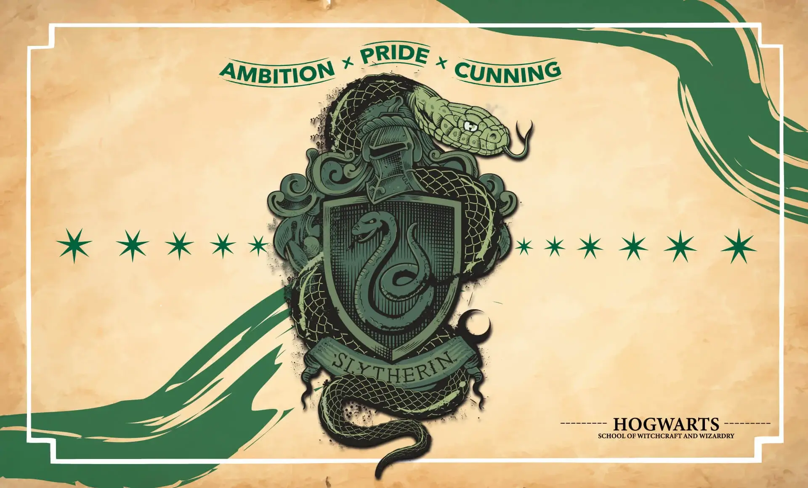
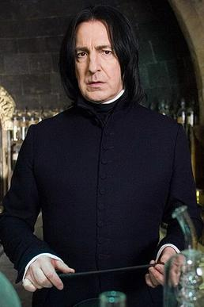

Slytherin es conocida por sus estudiantes ambiciosos, astutos y con una gran determinación. Fundada por Salazar Slytherin, la casa valora la astucia, la ambición y el liderazgo. Los colores de la casa son verde y plata, y su animal representativo es la serpiente. Los miembros más conocidos de esta casa incluyen a Draco Malfoy, Severus Snape y Lord Voldemort.
La Sala Común de Slytherin está ubicada en las mazmorras, debajo del lago de Hogwarts, y tiene acceso a través de un retrato de una dama de la que se debe dar la contraseña correcta.
Profesor de la Casa

Severus Snape
Profesor de Pociones y Jefe de Slytherin